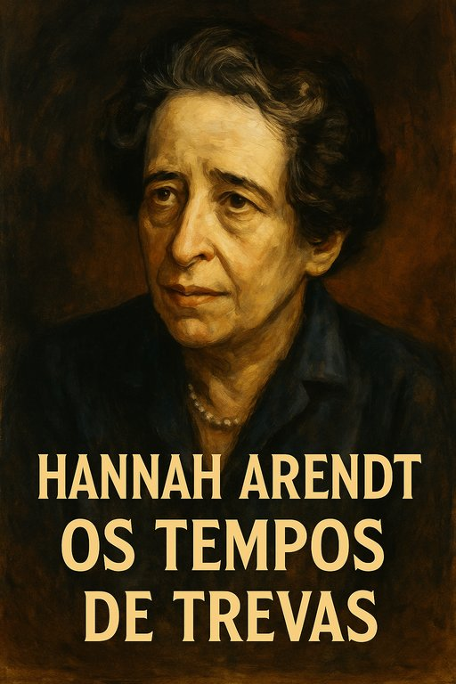

Publicado em 2025-06-22 13:43:57
Pensamento, Coragem e Luz em Tempos de Trevas
Num tempo em que a mentira se tornou sistemática, o totalitarismo ressurge camuflado sob novas máscaras e o pensamento livre é cada vez mais raro, a obra de Hannah Arendt brilha como um farol de lucidez ética e coragem intelectual. A sua crítica às formas modernas de dominação, à banalidade do mal e à fragilidade das democracias é mais atual do que nunca.
Arendt revelou ao mundo que o mal, em regimes totalitários, não é sempre cometido por monstros, mas por homens comuns que, ao abdicar do pensamento crítico, passam a agir mecanicamente sob ordens. "A essência do totalitarismo não é a monstruosidade dos seus crimes, mas a normalidade daqueles que os cometem."
No julgamento de Adolf Eichmann, Arendt observou que o maior perigo para a humanidade é a ausência de pensamento. Eichmann não era um fanático, mas um burocrata obediente — o paradigma daquilo que ela chamou a 'banalidade do mal'. "Pensar não é apenas perigoso, é também um ato de responsabilidade."
Arendt antecipou a era da desinformação, das verdades alternativas e da manipulação em massa. Para ela, a política só se sustenta na verdade factual, e quando esta é corroída, abre-se caminho ao autoritarismo. "O resultado de uma substituição sistemática da verdade pelos factos é a destruição da confiança no mundo real."
A liberdade, para Arendt, nasce no espaço público, onde diferentes vozes podem expressar-se e agir. Uma sociedade sem pluralidade é o solo fértil da opressão. "A liberdade começa com o aparecimento dos outros."
Se vivemos uma época em que os Estados relativizam o terrorismo, em que o medo e o conformismo toldam a razão, o pensamento arendtiano é uma convocatória à coragem moral. "Num mundo em trevas, ser luz é resistir com pensamento, verdade e justiça."
Em tempos sombrios como os que atravessamos — onde se desculpam tiranias, se relativiza o mal e se adormece a consciência crítica — ler Hannah Arendt é um ato de resistência. O seu legado não é apenas teórico, é um apelo à ação lúcida, ao discernimento e à defesa intransigente da dignidade humana.
“Pensar é perigoso, mas não pensar é fatal. Num mundo que se curva perante o ruído e o espetáculo, o silêncio interior da reflexão tornou-se um ato de resistência. Hannah Arendt ensinou-nos que a banalidade do mal floresce sempre que os homens abdicam de pensar por si próprios. Hoje, mais do que nunca, precisamos da coragem de pensar, de duvidar e de denunciar. A escuridão cresce onde a razão se cala.”